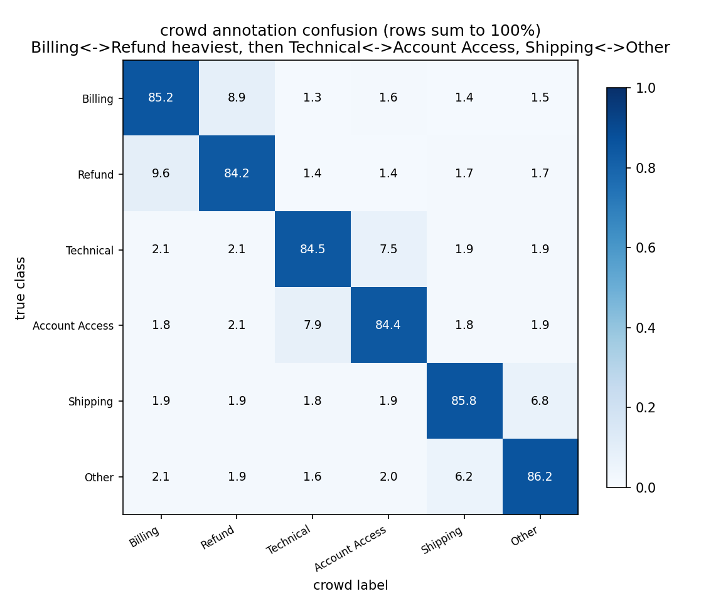
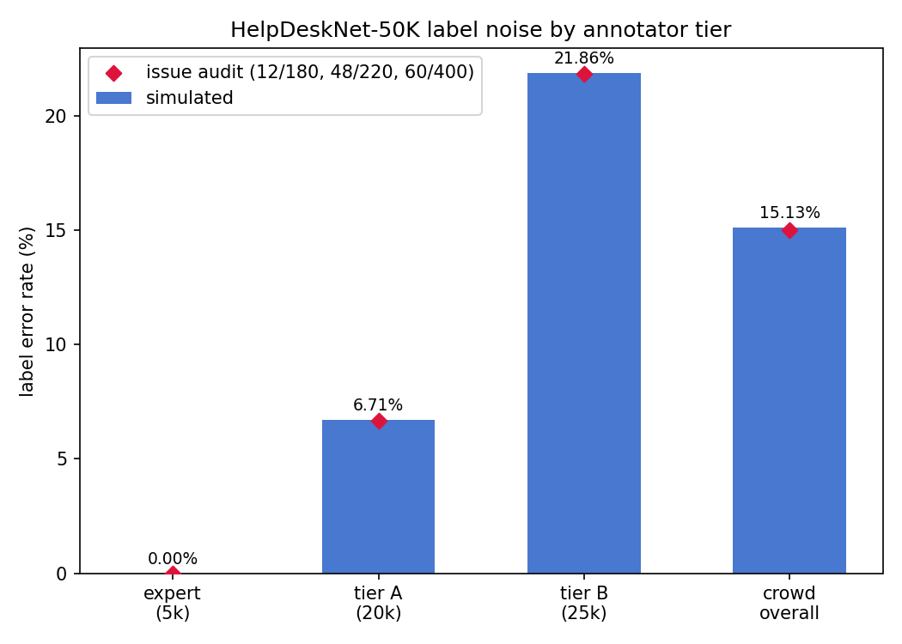
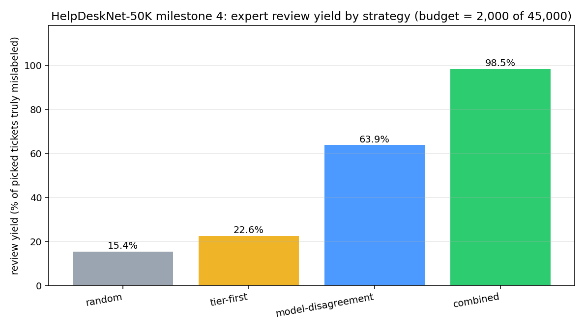
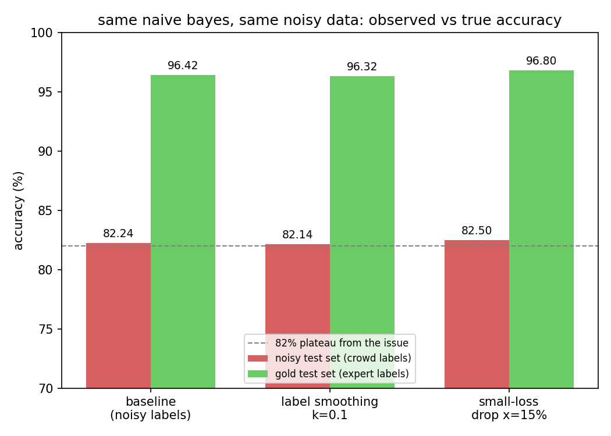

ReliefHub — Flood Relief Coordination Dashboard
Full coordination platform for Sindh flood response: camp registry with capacity auto-status, needs vs warehouse inventory with fulfilment tracking, dispatches with strict stock-reservation rules (validated end-to-end), donations, volunteer assignment, and a KPI dashboard that surfaces critical gaps. Vanilla-JS module framework, role-based views, video banners, landing page with live stats, and a read-only demo mode when no API is running.
Automated Security Scanning in CI/CD
A DevSecOps pipeline scanning a sample Node/Express + Docker app with Semgrep (hand-written rules), npm audit, Gitleaks and Trivy (image + filesystem), enforcing a policy gate that fails builds on Critical/High findings and publishing a consolidated dashboard. The Actions history shows the full story: a red run that caught 48 findings, a remediation wave (env credentials, safe parser replacing eval, parameterized queries, sha256, patched deps), then a green run with documented base-image exceptions. The AWS extension (ECR + Inspector + S3 via OIDC) is documented in aws-deploy.example.yml.
Noisy Labels: HelpDeskNet-50K
Why does a 50,000-ticket classifier plateau at 82%? Because the labels are noisy — and we quantified it: 15.0% crowd error (Wilson 95% CI [11.8%, 18.8%]), a real Tier A/B quality gap (z = 4.22, p ≈ 2.4×10⁻⁵), systematic Billing↔Refund confusion (43% of errors), and a true-accuracy ceiling of ~96% under uniform-flip assumptions. A simulation reproduces the 82%/96% split empirically, and the expert-review experiment shows combined scoring achieves 98.5% review yield — 6.4× more error fixed per expert-hour than random selection.



